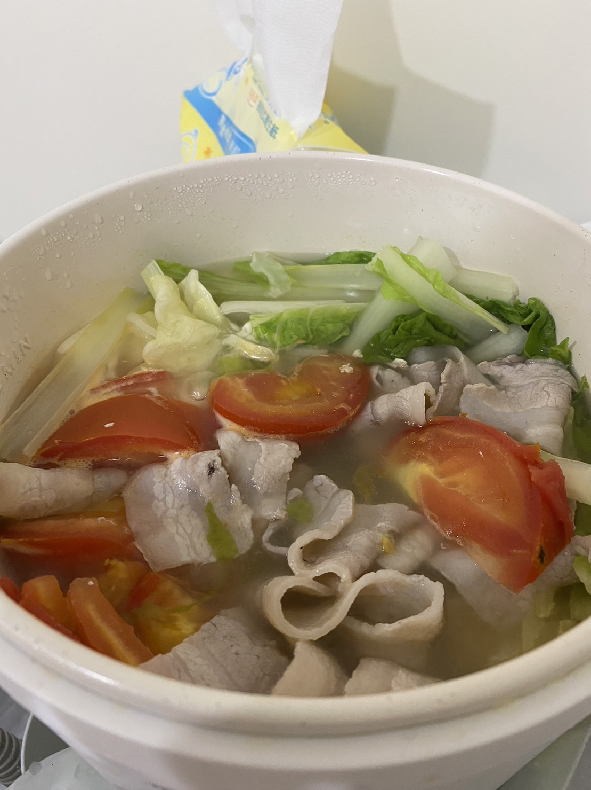
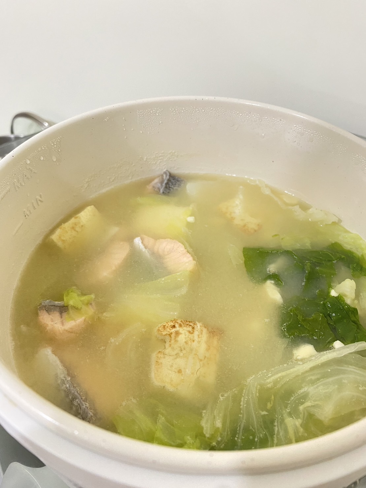
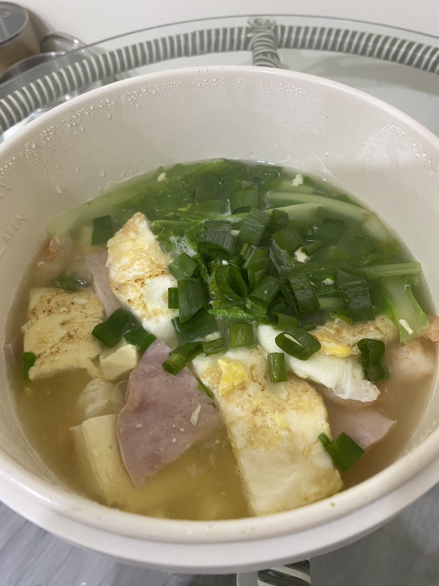
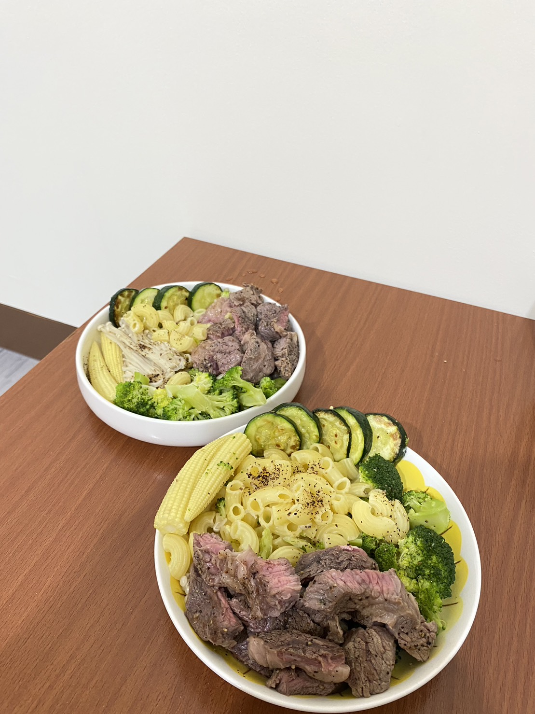

Tofu, Every kind of vegetable, Egg, Meat
1.Tomato Tofu Soup
Ingredient: pork, spoon cabbage, tomato, egg,

2.Miso Salmon Tofu Soup
Ingredient: miso, salmon, egg tofu, cabbage

3.Fried Eggs Tofu Soup
Ingredient: egg, tofu, ham, chopped onion, tofu

4.Diced Beef with Boiled vegetables
Ingredient: beef, pasta, broccoli, baby corn, zucchini
